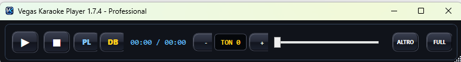
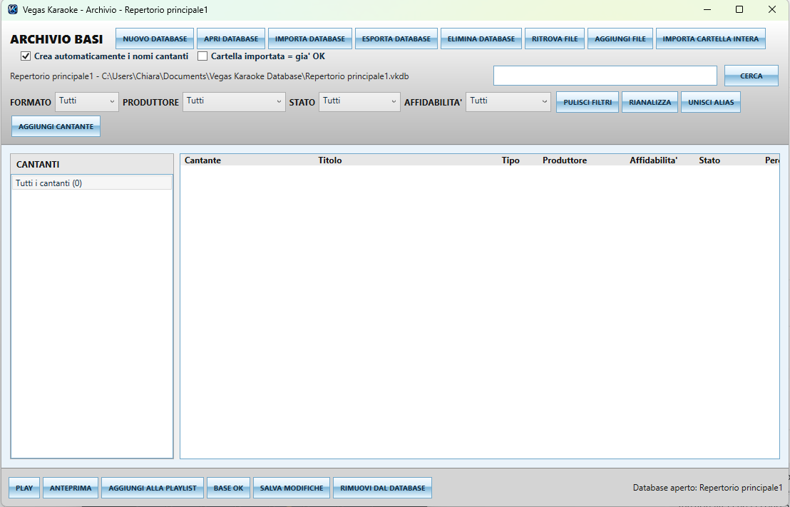
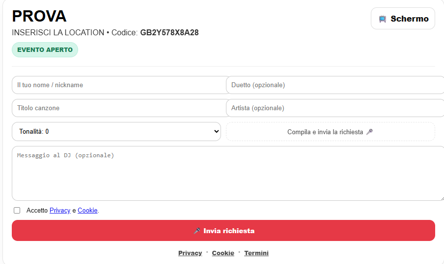

Software Karaoke Professionale per Windows
La workstation professionale per karaoke, DJ, musicisti, band live e locali. Una moderna alternativa ai tradizionali player karaoke professionali, sviluppata in Italia per chi lavora davvero nelle serate live.
Supporta i principali formati karaoke, audio e video: MP3, WAV, MP4, AVI, MKV, MID, MIDI, KAR, KFN/KNF, CDG, LRC e altri formati compatibili con Windows. Include Mini Player rinnovato, database repertorio avanzato, Jangle Live per pad e jingle, Creazione Karaoke con IA, multi-monitor, SoundFont, ASIO, multitraccia e Pannello DJ Online senza app.
Player compatto
Archivio basi
Creazione karaoke
Pad live


Le novità principali della 1.7.4
Una versione pensata per lavorare meglio durante le serate: più controllo, più ordine, meno spazio occupato sullo schermo.
🆕 Mini Player
Modalità compatta con comandi essenziali sempre visibili: play, tonalità, mix, playlist, database, schermi karaoke e fullscreen.
📚 Database integrato
Archivio basi con importazione cartelle, ricerca rapida, filtri, gestione cantanti, produttori, stato, affidabilità e alias.
🎤 Player completo
Modalità normale e mini, playlist, cambio tonalità, mixer, monitor 1/2/3, fullscreen e gestione live.
🌐 DJ Online senza app
Prenotazioni da smartphone, tablet o PC via browser e QR Code. Nessuna app da installare.
🎹 MIDI & SoundFont
Motore MIDI con SoundFont SF2/SF3, mixer canali, tonalità, BPM ed equalizzazione.
🎚️ ASIO, VST e routing
Driver ASIO/WASAPI, preascolto, microfono live, plugin VST e matrice routing per uscite audio dedicate.
Controllo completo, spazio minimo
La modalità Mini Player è pensata per notebook, schermi piccoli e serate dove il desktop deve rimanere libero. Tutti i comandi principali restano disponibili in una barra compatta.
- Play, stop, pausa e gestione tonalità
- Accesso rapido a mixer, playlist, database e schermi
- Ideale per lavorare insieme ad altri programmi durante eventi live
Database karaoke integrato
Importa cartelle complete, organizza migliaia di basi, gestisci cantanti, produttori e alias. Una funzione pensata per chi possiede grandi repertori karaoke.
- Nuovo database, importazione ed esportazione
- Ricerca veloce e filtri per formato, produttore, stato e affidabilità
- Gestione alias cantanti e ritrovamento file

Pannello DJ Online senza installare applicazioni
Cantanti e partecipanti possono prenotare brani da qualsiasi dispositivo con browser tramite QR Code o link. Nessuna applicazione da scaricare.
- Smartphone, tablet, PC e dispositivi con browser
- Richieste, tonalità, messaggi e playlist live
- Perfetto per locali, feste, karaoke pubblici e serate professionali

Testo grande, logo e personalizzazione completa
Mostra il testo karaoke in fullscreen su TV, monitor o videoproiettore. Puoi personalizzare font, colori, logo, sfondo, GIF, messaggi e modalità 2 o 4 righe.
Guarda la galleria
Funzioni personalizzate su preventivo
Vegas Karaoke Player può essere esteso con funzioni dedicate a DJ, locali, band o organizzatori di eventi. Le richieste vengono analizzate singolarmente e, se realizzabili, preventivate separatamente.